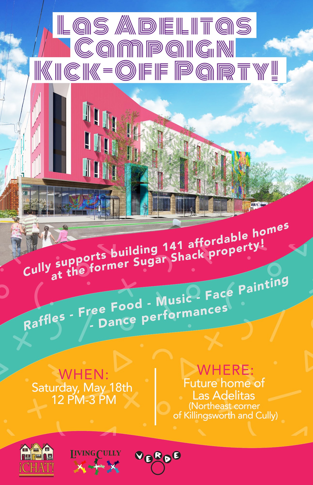
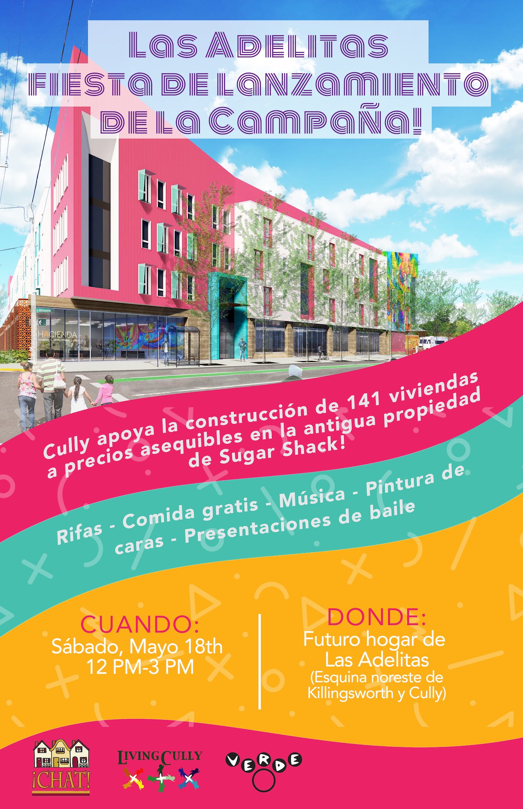
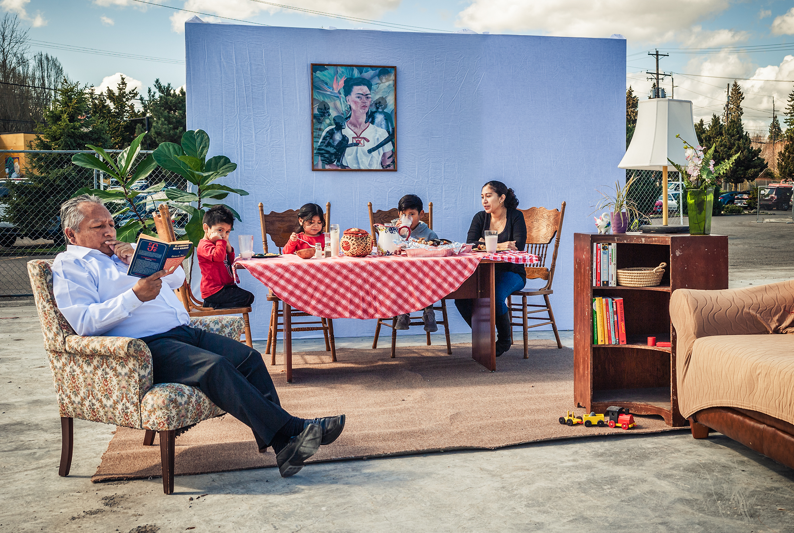

CAMPAIGN KICK-OFF PARTY!


We need volunteers! Click here to sign up.
Dear City of Portland,
Las Adelitas will provide 141 affordable homes and a community events space for the Cully neighborhood — all at the former site of the Sugar Shack strip club, which we shut down through community action.
Help us write the next chapter of our story and make this dream a reality!
Photo Credit: Sean Donalee